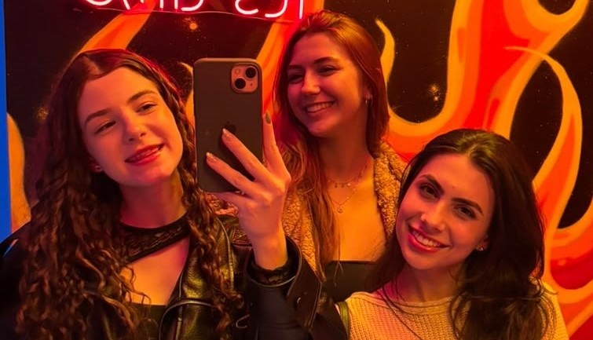

Jazz Dance and Ballet
Dancing has always been one of the most meaningful ways I have found to express my emotions. Among all the activities and commitments I have had throughout my life, ballet and jazz dance were always a constant.
From a very young age, I grew up on stage, performing in celebrations such as Mother’s Day, Christmas, and other special occasions. Between countless rehearsals, performances, and hours spent practicing in pointe shoes, I developed not only my motor coordination, but also resilience, discipline, and meaningful friendships.


More than just a physical activity, ballet and jazz became an important part of my personal journey and introduced me to my best friends, Giovanna and Ana Laura. Our friendship grew through years of rehearsals, performances, and shared experiences. Even after I decided to end my dancing career, our friendship remained strong. Giovanna continued dancing, and I have always supported and encouraged her. Ana, on the other hand, improved her academic career and became a pre-med student. Looking back, I realize that ballet gave me much more than the ability to dance. It gave me memories, friendships, and lessons that I continue to carry with me.
